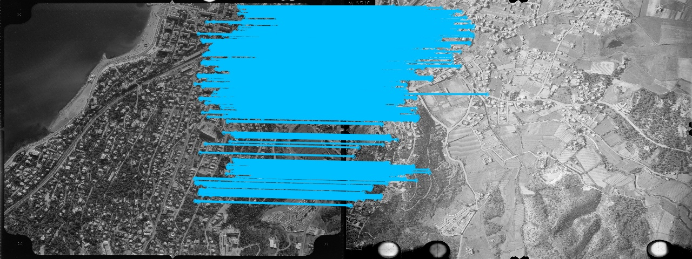
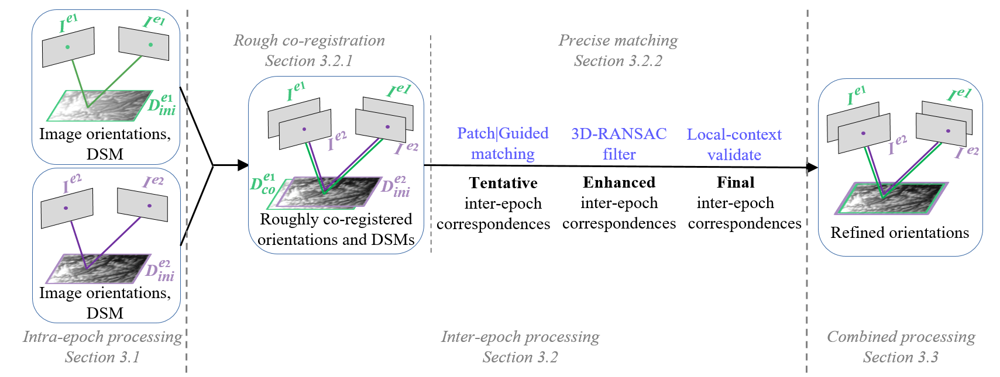

In-brief: This paper introduces a pipeline that improves the accuracy of pose estimation of multi-epoch historical images by finding reliable and precise feature matches invariant to time. To do that we exploit RGB images and coarse 3D geometry, as well as the modern deep learning feauture matching algorithms.

Historical imagery is characterized by high spatial resolution and stereoscopic acquisitions, providing a valuable resource for recovering 3D land-cover information. Accurate geo-referencing of diachronic historical images by means of self-calibration remains a bottleneck because of the difficulty to find sufficient amount of feature correspondences under evolving landscapes. In this research, we present a fully automatic approach to detecting feature correspondences between historical images taken at different times : (i.e., inter-epoch), without auxiliary data required. Based on relative orientations computed within the same epoch (i.e., intra-epoch), we obtain DSMs (Digital Surface Model) and incorporate them in a rough-to-precise matching. The method consists of: (1) an inter-epoch DSMs matching to roughly co-register the orientations and DSMs (i.e, the 3D Helmert transformation), followed by (2) a precise inter-epoch feature matching using the original RGB images. The innate ambiguity of the latter is largely alleviated by narrowing down the search space using the co-registered data. With the inter-epoch feature correspondences, we refine the image orientations and quantitatively evaluate the results (1) with DoD (Difference of DSMs), (2) with ground check points, and (3) by quantifying ground displacement due to an earthquake. We demonstrate that our method: (1) can automatically georeference diachronic historical images; (2) can effectively mitigate systematic errors induced by poorly estimated camera parameters; (3) is robust to drastic scene changes. Compared to the state-of-the-art, our method improves the image georeferencing accuracy by a factor of 2. The proposed methods are implemented in MicMac, a free, open-source photogrammetric software.

@article{zhang2021histopipeline,
author = {Lulin Zhang and
Ewelina Rupnik and
Marc Pierrot-Deseilligny},
title = {Feature matching for multi-epoch historical aerial images},
journal = {ISPRS Journal of Photogrammetry and Remote Sensing},
volume = {182},
pages = {176-189},
year = {2021},
}